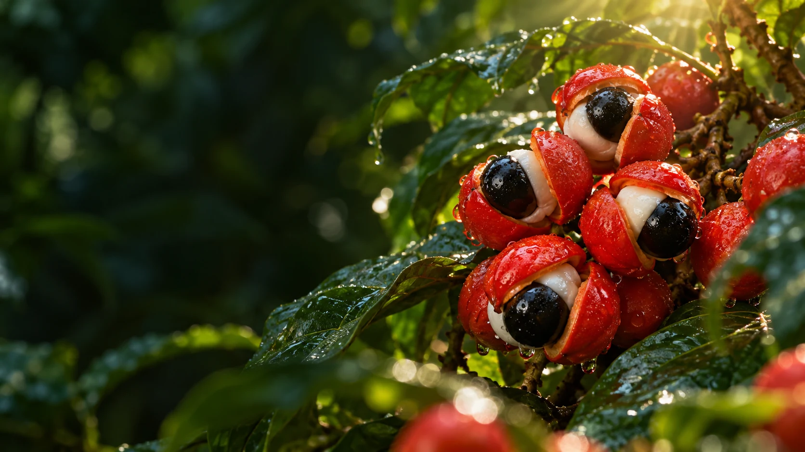

PRODUTO · ORIGEM · FRESCOR
Display: Anton. Texto: Barlow.Escala de campanha, leitura direta e produto real.
Verde / #006B3C
Verde profundo / #003F2E
Creme / #FFF8D9
Amarelo / #F3E847
Vermelho / #E2271B
